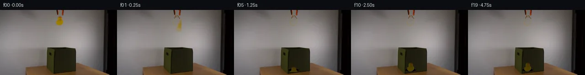

![首帧]()

Round 00
2026-11-06T09:39:38.151261+00:00像素候选变化代码 +208/−0inspection 更新
pixels 9280730f2a4e3e1a · code 497239f9012683ec
查看本轮 generate.py 真实 diff
--- previous/generate.py
+++ current/generate.py
@@ -0,0 +1,208 @@
+"""PixelWorld case_0058: orange-black grabber releases a yellow rubber duck
+above an open dark-green fabric box.
+
+Pure local pixel operations: sprite extraction with fringe unmixing,
+row-interpolated wall inpainting, analytic jaw/finger redraw, gravity-driven
+fall integrated over each 0.25 s exposure (motion blur), depth darkening,
+fabric squash and contact shadow. Frame 00 is the untouched first frame.
+"""
+from pathlib import Path
+import sys
+import numpy as np
+from PIL import Image, ImageDraw
+from scipy import ndimage
+
+WORK = Path(__file__).resolve().parent
+sys.path.insert(0, str(WORK))
+from artifact_io import save
+
+H, W, N = 144, 256, 20
+FPS = 4.0
+DT = 1.0 / FPS
+
+# ---------------------------------------------------------------- geometry
+F0 = np.array(Image.open(WORK / "first_frame.png").convert("RGB"))
+assert F0.shape == (H, W, 3) and F0.dtype == np.uint8
+f0 = F0.astype(np.float32)
+R, G, B = f0[..., 0], f0[..., 1], f0[..., 2]
+
+# --- duck core: connected yellow component held in the clamp
+core0 = (R > 105) & (G > 70) & (B < 48) & (R - B > 70)
+lbl, ncc = ndimage.label(core0)
+duck_core = lbl == lbl[24, 130]
+
+# --- wall reconstruction: per-row linear gradient between wall anchors
+xs_l, xs_r = np.arange(100, 118), np.arange(142, 156)
+xL, xR = float(xs_l.mean()), float(xs_r.mean())
+wall = np.empty_like(f0)
+left = f0[:, xs_l].mean(axis=1)[:, None, :]
+right = f0[:, xs_r].mean(axis=1)[:, None, :]
+t = (np.arange(W) - xL) / (xR - xL)
+wall = left + (right - left) * t[:, None]
+wall = np.clip(wall, 0, 255)
+
+# fine grain borrowed from a plain-wall strip shifted +60 px in x
+blur = np.stack([ndimage.gaussian_filter1d(
+ ndimage.gaussian_filter1d(f0[..., c], 0.9, axis=0), 0.9, axis=1)
+ for c in range(3)], axis=-1)
+resid = f0 - blur
+
+# --- sprite: core + one-pixel fringe, alpha by linear unmixing against wall
+pad = 2
+ys_c, xs_c = np.where(duck_core)
+bx0, bx1, by0, by1 = xs_c.min(), xs_c.max(), ys_c.min(), ys_c.max()
+sx0, sy0, sx1, sy1 = bx0 - pad, by0 - pad, bx1 + pad + 1, by1 + pad + 1
+sw, sh = sx1 - sx0, sy1 - sy0
+
+alpha = np.zeros((sh, sw), np.float32)
+alpha[duck_core[sy0:sy1, sx0:sx1]] = 1.0
+
+# local duck colour for each fringe cell = mean core colour within radius 4
+core_img = np.zeros((H, W), bool)
+core_img[duck_core] = True
+cnt = ndimage.uniform_filter(core_img.astype(np.float32), size=9)
+meanc = np.stack([ndimage.uniform_filter(np.where(core_img, f0[..., c], 0), 9)
+ for c in range(3)], axis=-1)
+meanc = meanc / np.maximum(cnt, 1e-6)[..., None]
+
+yy, xx = np.mgrid[sy0:sy1, sx0:sx1]
+near_core = ndimage.binary_dilation(core_img, iterations=1) & ~core_img
+cand = near_core[sy0:sy1, sx0:sx1]
+col = f0[sy0:sy1, sx0:sx1]
+wcol = wall[sy0:sy1, sx0:sx1]
+dcol = meanc[sy0:sy1, sx0:sx1]
+# fringe must look yellow (blue below jaw/wall values); unmix alpha
+fringe_hue = (col[..., 2] < 78) & (col[..., 0] - col[..., 2] > 55)
+dv = dcol - wcol
+a_un = (((col - wcol) * dv).sum(-1)) / np.maximum((dv * dv).sum(-1), 1e-6)
+a_un = np.clip(a_un, 0, 1)
+fr = cand & fringe_hue & (a_un > 0.12)
+alpha[fr] = a_un[fr]
+
+sprite = np.dstack([col, alpha * 255]).astype(np.uint8) # RGBA
+# sprite-local anchor: bottom-centre of resting duck (global (130,133))
+ANC_X, ANC_Y = 130 - sx0, 133 - sy0
+
+# ---------------------------------------------------------------- static bg
+bg = f0.copy()
… diff truncated; 121 more lines …